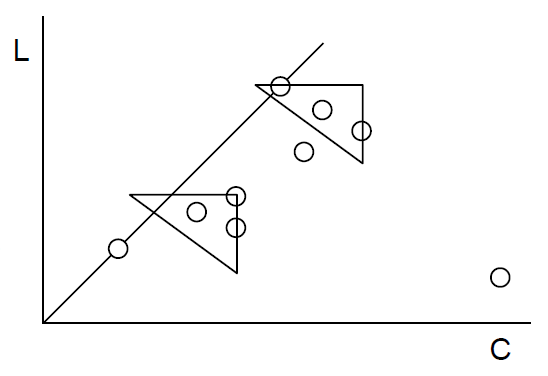
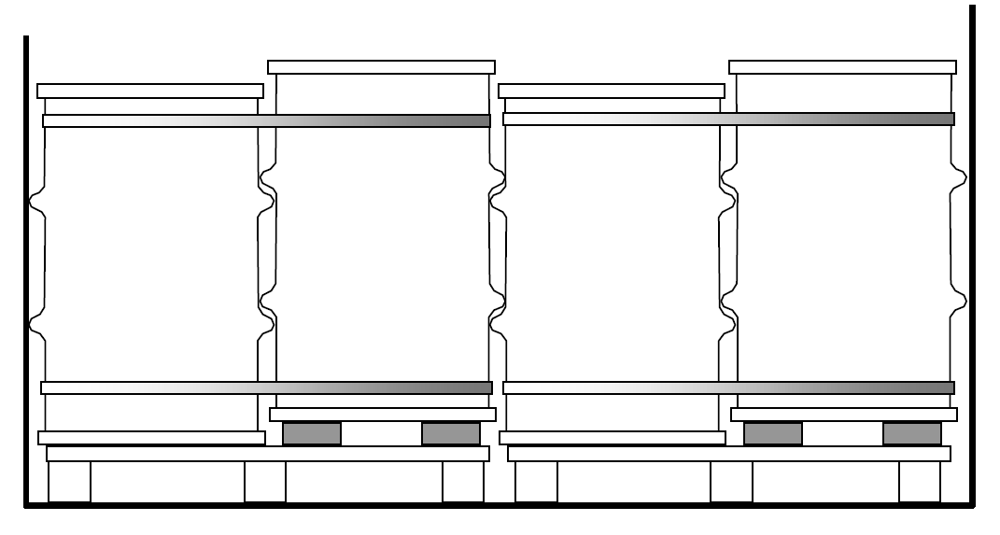
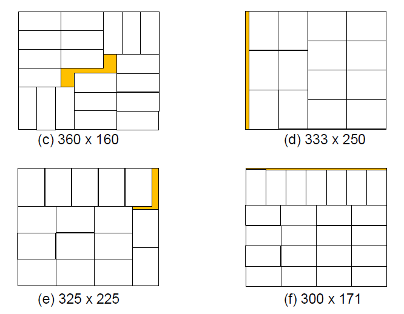
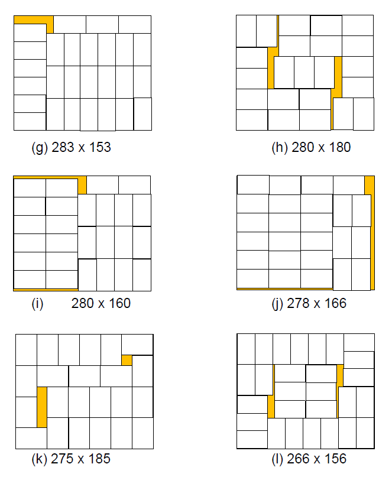
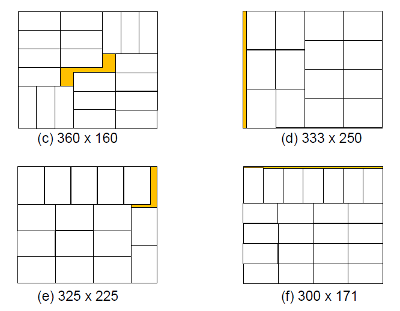
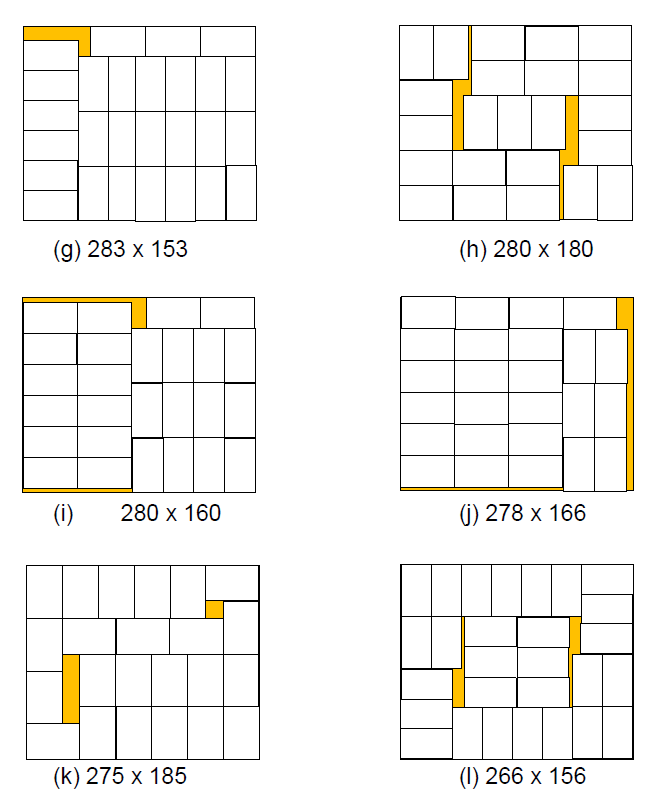

Dimensionamento geométrico
O projeto dimensional da embalagem começa com o dimensionamento geométrico: forma e dimensões. Este projeto depende, é claro, de um lado, da análise dimensional do produto embalado, que, como vimos, não é trivial. Envolve, quase sempre, uma preocupação com a minimização das dimensões, associada a uma minimização de custos de embalagem e logística (espaços físicos). Por outro lado, as restrições dimensionais desse espaço, no transporte, movimentação e armazenamento, vinculados às padronizações de unidades de carga, que já abordamos. Então, temos duas referências para o dimensionamento: a interna e a externa.
No caso mais simples, dadas as dimensões do produto determina-se, através de um critério de folgas necessárias, as dimensões da embalagem. A folga pode ter a ver com a necessidade de inserir as mãos para a retirada do produto da embalagem, ou de manter o produto afastado das paredes da embalagem como forma de proteção contra impactos localizados. Sistemas de calços ou acolchoamentos, para a proteção do produto contra choques e vibrações, devem ser dimensionados (como veremos adiante) de forma que afeta o dimensionamento da embalagem. Vimos, ao tratar das dimensões do produto, o caso das batatas fritas padronizadas. Pode-se, também, compactar determinados produtos, como toalhas de banho, para que caibam em embalagens de menor tamanho. Produtos têxteis podem ser dobrados de forma a se obter uma otimização do espaço ocupado ou uma compatibilização com o referencial externo, normalmente o palete.
Padronização interna da embalagem
Num caso mais complexo, tem-se uma embalagem para mais de um produto. Isso ocorre quando há necessidade de padronização. Se uma empresa tem cem produtos diferentes, naturalmente não poderá ter cem embalagens diferentes, pois perderia toda economia de escala, seja na aquisição das embalagens, seja na operação, controle de estoques, automação, etc..
Certamente, se uma embalagem deve servir para mais de um produto, alguns ficarão com espaço sobrando, enquanto poucos caberão mais justamente. O problema geral é o de minimizar a quantidade de embalagens para todos os produtos, minimizando também as folgas inevitáveis. Não temos, ainda, uma solução matemática, determinística, desse problema, apesar de o mesmo ter já sido apresentado a diversos estudantes e professores de computação e matemática. Talvez por termos uma solução heurística que já se mostrou satisfatória.
A solução heurística envolve, primeiro, a criação de embalagens ideais para cada produto. É possível, mesmo, que determinado produto tenha mais de uma embalagem adequada, com a variação de posições ou arranjos, por exemplo. Assim, para os meus cem produtos originais, posso ter 130 ou 140 embalagens ideais. O passo seguinte, é o de alinhar todas as embalagens por ordem de altura, de forma que possa introduzir pontos de cesura, separando diferentes grupos: o grupo das caixas mais altas, das menos altas, das médias, das menos baixas e das mais baixas, por exemplo. Vamos, então, trabalhar com cada grupo, plotando em um gráfico o comprimento e a largura de cada caixa.

Verifica-se que todas as caixas poderiam ser substituídas pela caixa X, na figura, mas isso implicaria uma folga excessiva. É preciso, então, estabelecer um critério de folga admissível do produto na caixa. Poderia ser adotado o critério de um limite de comprimento e outro de largura para a folga admissível. Então, sobre o gráfico, poderiam ser posicionados retângulos com essas dimensões limite, estudando-se o melhor posicionamento.

As nove caixas seriam substituídas por quatro.
Um refinamento da análise poderia ocorrer com a introdução de uma classificação de Pareto (ABC) para cada um dos pontos, ou, ao menos, uma identificação dos pontos correspondentes aos produtos mais importantes, para os quais as folgas devem ser ainda menores. Tem-se, então, um jogo de “quebra-cabeça” (portanto o método é heurístico), no qual se procura minimizar o número de retângulos que cubram todos os pontos. O vértice superior direito do retângulo corresponde à dimensão da caixa substitutiva. Alguns pontos isolados são produtos que terão uma caixa só para eles. Um outro critério de folga admissível poderia ser o de área máxima perdida. Em lugar de um retângulo, teríamos uma figura parabólica:

Para simplificar, adotamos, no IPT, a figura de um triângulo. Teríamos, nesse caso, cinco caixas substitutivas, para esse grupo de altura, em lugar das nove originais. Faz-se, a seguir, um reajuste das alturas de cada caixa.
Eventualmente, as dimensões ideais de paletização (norma IPT-NEA 52 PD) e, adiante, Paletização de caixas, podem ser plotadas nesse jogo.

Caixas ajustáveis
Caixas telescópicas, de papelão, podem ter uma tampa que se ajusta ao fundo e se apóia no produto embalado (desde que este suporte empilhamento), ficando a altura da embalagem determinada pela altura do produto. Bobinas de diferentes larguras, formulários contínuos com diferentes números de cópias, por exemplo, fazem uso desse sistema. Caixas com vincos múltiplos nas abas da tampa também podem ter altura ajustável.
Sistemas de modulação
Um quadro mais complexo é o da necessidade de se colocar diferentes produtos em uma mesma caixa, simultaneamente. Isso ocorre em sistemas de distribuição por encomenda, de consumidores (Avon) ou das lojas (C&A, Pernambucanas), ou no projeto de embalagens para peças sobressalentes (como o que realizamos para a antiga Engesa). Neste caso, não há uma solução que possa ser baseada nas dimensões dos produtos. O referencial externo passa a ser dominante. As dimensões do palete, ou as do contêiner (no caso das grandes caixas de madeira para as peças sobressalentes), são base para um sistema de modulação.
Os sistemas de modulação geralmente implicam grandes folgas, grandes perdas de espaço. Um sistema de modulação pode ser pensado em que apenas uma das dimensões é modulada. Para aproveitamento da altura do caminhão, posso ter caixas com alturas moduladas, de forma a obter uma certa regularidade do empilhamento.
Não interessa, naturalmente, um bom aproveitamento do espaço pela embalagem, mas sim pelo produto contido. Para que não haja grande perda de espaço dentro da embalagem padronizada, essa padronização tem que ser muito bem estudada, em função das dimensões dos produtos embalados.

Um separador rígido pode ser colocado entre um e outro módulo de empilhamento, para melhor distribuição das cargas de compressão.
O caso mais geral de aproveitamento do referencial externo é o da adequação da embalagem ao palete. A norma IPT-NEA 52 PD indica as dimensões de caixas e arranjos das mesmas em paletes ISO de 1100 x 1100 e 1000 x 1200mm. A ISO especifica a dimensão de 1140 x 1140mm, mais adequada ao contêiner, mas a de 1100 x 1100 é mais usual, especificada pela ANSI, por norma australiana e por norma japonesa.
Além dos paletes padrão ISO, o IPT propõe, com base em experiência observada em diversos países da Europa, o conceito de “meio palete”. Com dimensões de 1000 x 600mm, é adequado à movimentação manual por garfo rodante Radicalizando esse conceito, foi proposto o “minipalete” de 600 x 500mm, como visto ao tratarmos da Movimentação. Essas propostas, do meio e do minipalete, implicam a modulação de embalagens com o módulo de 600 x 500mm.
Os sistemas de modulação mais usados estão baseados nas dimensões de 600 x 400mm e de 600 x 500mm. O primeiro é mais usado, pois foi um sistema pioneiro, criado por empresas européias que tinham como referência o palete Europa, de 1200 x 800mm, embora sirva também para o de 1200 x 1000mm. O segundo é adequado aos paletes de 1100 x 1100 e de 1200 x 1000mm. O segundo apresenta ainda as vantagens de menor custo por volume de capacidade e melhor aproveitamento volumétrico no transporte de caixas vazias, como vemos a seguir.
Transporte de caixas vazias
Mencionamos, ao tratar dos transportes, a necessidade de aproveitar o espaço quando se trata de caixas vazias. Uma solução adotada é colocar uma ou duas caixas dentro de outras duas. Com isso, posso usar dois caminhões em vez de três, em muitos casos. Para isso, no entanto, é preciso que as caixas tenham determinadas dimensões, que permitam esse aproveitamento. Este sistema é usado em caixas plásticas de hortifrutícolas, por exemplo.

O módulo de 600 x 500 mm é ideal para esta solução. Verifica-se, neste exemplo, que seis caixas ocupam o espaço de quatro. Uma dificuldade, neste tipo de empilhamento, é a estabilização das pilhas. Caixas plásticas, por exemplo, têm um fundo que se encaixa à boca, garantindo assim a estabilidade. Quando o empilhamento é feito boca contra boca e fundo contra fundo, como se vê na figura à direita, é necessário que as caixas tenham um desenho especial para permitir o encaixe. Ver Estudo de Casos 1.
Outra forma de otimização no transporte de caixas vazias é tê-las colapsáveis (dobráveis ou desmontáveis). Busca-se, nesse caso, um desenho em que as caixas vazias dobradas ocupem, quando empilhadas, a mínima altura possível. Estudo de Casos 7, por exemplo (caixas de madeira).
Dimensionamento volumétrico
Um caso bastante comum de dimensionamento em função do produto ocorre quando este não tem dimensões estabelecidas, mas um volume. Pode haver, então, uma preocupação em minimizar a quantidade de material de embalagem, ou seu custo. Para caixas de papelão usuais, por exemplo, codificadas pela NBR 5980, são as seguintes as relações entre as dimensões de comprimento C, largura L e altura A que resultam em mínima área de material para dado volume:
| Tipo | Relação |
|---|---|
| 0201 | C = 2L = A |
| 0203, 0206 | 2C = 4L = A |
| 0204 | C = L = A |
| 0301 | C = L = 4A |
| 0320 | C = 2L = A |
Mesmo para caixas não codificadas, é fácil, por simples equações diferenciais, chegar à minimização da área para dado volume (ver estudo de caso 3).
Para caixas plásticas injetadas, sem tampa: C = L = 2A. Para embalagens cilíndricas, a altura H = diâmetro D. Se as áreas circulares de tampa e fundo forem obtidas de áreas quadradas da folha estampada: H = D 4/π . Como as áreas de tampa e fundo apresentam, geralmente, uma espessura maior e visa-se minimizar a quantidade de material, e não a área, teria que haver uma correção dessa fórmula. Para um tambor, resulta que a altura deve ser aproximadamente o dobro do diâmetro. Um ajuste ao referencial externo (palete de 1140 x 1140mm, por exemplo), definiria as dimensões ideais do tambor.
O simples posicionamento da tampa de uma caixa (das mais comuns, tipo 0201, que tiver uma face menor) pode reduzir a área de papelão, dada a menor área de superposição das abas.

Abrindo um parêntese no tema do dimensionamento, apenas por citarmos o caso do tambor paletizado, temos a observar um problema comum com tambores de aço de 200 litros: a dificuldade de colocá-los em um contêiner. Esses tambores têm diâmetro externo de aproximadamente 600mm sobre os anéis de reforço, e o contêiner tem largura interna da ordem de 2340mm.
O jeito é adotar um palete especial, com ressaltos que elevam dois tambores em relação aos dois outros, fazendo desencontrarem-se os anéis de reforço, o que também melhora a distribuição de esforços localizados, reduzindo amassamentos.

Paletização de caixas
Determinadas dimensões de caixas dão um aproveitamento ideal da área dos paletes. Estudamos, no IPT, a determinação dessas dimensões e elaboramos a Norma IPT-NEA 52 — Paletização — Dimensões planas de embalagens para paletes de 1100 x 1100 e 1000 x 1200mm. Para isso, foi criado um programa de computação e foram analisadas as normas ANSI MH 10.1:1980 — Unit Load and Transport Package Sizes e a Norma Australiana AS 2348 — Guide to the Determination of the Optimum Dimensions of Packages for Unit Load Handling.
As tabelas a seguir apresentam as seguintes colunas:
- A –
- dimensões planas (comprimento e largura) das embalagens;
- B –
- número de caixas por camada;
- C –
- arranjo, conforme indicado nas figuras;
Os espaços em branco significam que se deve buscar o dado acima, na coluna.
| A | B | C | A | B | C |
|---|---|---|---|---|---|
| 1100 x 1100 | 1 | M | 943 x 167 | 8 | M+1 |
| 1100 x 550 | 2 | — | 916 x 184 | 7 | — |
| 1100 x 366 | 3 | — | 880 x 220 | 6 | — |
| 1199 x 275 | 4 | — | 471 x 157 | 16 | — |
| 1100 x 220 | 5 | — | 458 x 183 | 14 | — |
| 1100 x 183 | 6 | — | 6440 x 220 | 12 | — |
| 1100 x 157 | 7 | — | 366 x 244 | 13 | — |
| 550 x 550 | 4 | — | 314 x 157 | 24 | — |
| 550 x 366 | 6 | — | 305 x 183 | 21 | — |
| 550 x 275 | 8 | — | 293 x 220 | 18 | — |
| 550 x 220 | 10 | — | 275 x 206 | 21 | — |
| 550 x 183 | 12 | — | 275 x 165 | 26 | — |
| 550 x 14 | 14 | — | 235 x 157 | 32 | — |
| 366 x 366 | 9 | — | 229x 183 | 28 | — |
| 366 x 275 | 12 | — | 220 x 176 | 31 | — |
| 366 x 220 | 15 | — | 188 x 157 | 40 | — |
| 366 x 183 | 18 | — | 183 x 152 | 43 | — |
| 366 x 157 | 21 | — | — | — | — |
| 275 x 275 | 16 | — | 330 x 220 | 16 | M+2 |
| 275 x 220 | 20 | — | 261 x 157 | 29 | — |
| 275 x 183 | 24 | — | 244 x 183 | 26 | — |
| 275 x 157 | 28 | — | 196 x 157 | 38 | — |
| 220 x 220 | 25 | — | — | — | — |
| 220 x 183 | 30 | — | 660 x 220 | 8 | C12 |
| 220 x 157 | 35 | — | 650 x 225 | — | — |
| 183 x 183 | 36 | — | 640 x 230 | — | — |
| 183 x 157 | 42 | — | 630 x 235 | — | — |
| 157 x 157 | 49 | — | 620 x 240 | — | — |
| — | — | — | 610 x 245 | — | — |
| 660 x 440 | 4 | C11 | 600 x 250 | — | — |
| 650 x 450 | — | — | 590 x 255 | — | — |
| 640 x 460 | — | — | 580 x 260 | — | — |
| 630 x 470 | — | — | 570 x 265 | — | — |
| 620 x 480 | — | — | 560 x 270 | — | — |
| 610 x 490 | — | — | 540 x 280 | — | — |
| 600 x 500 | — | — | 530 x 285 | — | — |
| 590 x 510 | — | — | 520 x 290 | — | — |
| 580 x 520 | — | — | 510 x 295 | — | — |
| 570 x 530 | — | — | 500 x 300 | — | — |
| 560 x 540 | — | — | 490 x 305 | — | — |
| — | — | — | 480 x 310 | — | — |
| — | — | — | 470 x 315 | — | — |
| — | — | — | 460 x 320 | — | — |
| — | — | — | 450 x 325 | — | — |
| — | — | — | 440 x 330 | — | — |

| A | B | C | A | B | C |
|---|---|---|---|---|---|
| — 1200 x 1000 | — 1 | — M | — 333 x 200 | — 18 | — M |
| 1200 x 500 | 2 | — | 333 x 173 | 20 | M+1 |
| 1200 x 333 | 3 | — | 333 x 171 | 21 | M |
| 1200 x 250 | 4 | — | 333 x 150 | 24 | — |
| 1200 x 200 | 5 | — | 325 x 225 | 16 | (e) |
| 1200 x 166 | 6 | — | 316 x 250 | 15 | M+1 |
| 1000 x 600 | 2 | — | 300 x 250 | 16 | M |
| 1000 x 400 | 3 | — | 300 x 233 | 17 | M+1 |
| 1000 x 300 | 4 | — | 300 x 200 | 20 | M |
| 1000 x 240 | 5 | — | 300 x 175 | 22 | M+1 |
| 1000 x 200 | 6 | — | 300 x 171 | 23 | (f) |
| 1000 x 171 | 7 | — | 288 x 166 | 24 | M |
| 1000 x 150 | 8 | — | 283 x 150 | 28 | M+1 |
| 600 x 500 | 4 | — | 282 x 153 | 27 | (g) |
| 600 x 400 | 5 | M+1 | 280 x 180 | 23 | (h) |
| 600 x 333 | 6 | M | 280 x 160 | 26 | (i) |
| 600 x 250 | 8 | — | 278 x 166 | 25 | (j) |
| 600 x 200 | 10 | — | 276 x 171 | 25 | M+1 |
| 600 x 166 | 12 | — | 175 x 185 | 23 | (k) |
| 520 x 160 | 14 | (a) | 275 x 150 | 28 | M+1 |
| 500 x 400 | 6 | M | 266 x 200 | 22 | — |
| 500 x 333 | 7 | (b) | 266 x 156 | 28 | (l) |
| 500 x 300 | 8 | M | 260 x 160 | 28 | (m) |
| 500 x 240 | 10 | M | 258 x 166 | 27 | M+1 |
| 500 x 233 | 10 | M+1 | 257 x 228 | 20 | (n) |
| 500 x 200 | 12 | M | 253 x 240 | 19 | M+1 |
| 500 x 171 | 14 | — | 250 x 240 | 20 | M |
| 500 x 150 | 16 | — | 250 x 200 | 24 | — |
| 475 x 250 | 10 | M+1 | 250 x 190 | 25 | M+1 |
| 433 x 333 | 8 | — | 250 x 171 | 28 | M |
| 433 x 166 | 16 | M+2 | 240 x 171 | 29 | (o) |
| 400 x 333 | 9 | M | 250 x 158 | 30 | M+1 |
| 400 x 300 | 10 | M+1 | 250 x 150 | 32 | M |
| 400 x 250 | 12 | M | 240 x 200 | 25 | — |
| 400 x 200 | 15 | M ou M+1 | 240 x 190 | 26 | M+1 |
| 400 x 166 | 18 | M | 240 x 166 | 30 | M |
| 400 x 150 | 20 | M+1 | 240 x 152 | 32 | M+1 |
| 380 x 240 | 13 | — | 233 x 166 | 30 | M |
| 360 x 160 | 20 | (c) | 233 x 150 | 34 | M+2 |
| 350 x 300 | 11 | M+1 | 225 x 162 | 32 | (p) |
| 350 x 150 | 22 | M+2 | 219 x 171 | 31 | M+2 |
| 333 x 300 | 12 | M | 216 x 166 | 32 | — |
| 333 x 250 | 14 | (d) | 212 x 150 | 37 | M+1 |
| 333 x 240 | 15 | M | 207 x 171 | 33 | — |
| 333 x 216 | 16 | M+1 | 206 x 166 | 34 | — |

  
  
Especificação das dimensões
Para efeito de especificação, as dimensões de uma embalagem são sempre dadas em milímetros, na seguinte ordem: comprimento, largura e altura. Pode haver, no entanto, alguma dúvida sobre o que é cada uma dessas dimensões. Normalmente a altura é a dimensão vertical, mas não é esse o conceito para as caixas de papelão. Nesse caso, a altura é a dimensão perpendicular à boca da caixa, independentemente da posição de transporte.

Para controlar as medidas da caixa de papelão, a mesma deve ser colocada sobre uma mesa plana e sobre ela deve ser colocada uma régua pesada. Mede-se a distância da régua à mesa, nas três posições, determinando-se, assim, as dimensões externas da caixa. Pode-se verificar, também, o esquadramento. Para determinar as dimensões internas, subtrair as espessuras. Este procedimento é melhor que o que usa calibres milimétricos ajustáveis.
É um erro especificar as dimensões da caixa de papelão pelas distâncias entre vincos. Certamente, quando é uma caixa tipo corte-e-vinco, com forma complexa, a especificação deve conter um desenho com todas as cotas e o controle da qualidade pode verificar a conformidade a esse desenho.
A especificação de dimensões deve apresentar uma tolerância, isto é, o desvio máximo admitido em relação a uma medida nominal. Para caixas tipo corte-e-vinco, produzidas com matrizes que não sofrem deformações, a tolerância pode ser de ±1mm a ±2mm para caixas maiores. Para caixas de produção em linha, com rolos de corte e de vinco, uma tolerância de ±0,5% é razoável.
Conjugação de dimensões de caixas de papelão
Um fabricante de caixas de papelão deve procurar aproveitar ao máximo a largura da chapa produzida pela onduladeira. Na composição de custos das caixas deve entrar um fator de aproveitamento, e deve-se procurar uma maximização da eficiência. Dificilmente um pedido de caixas levará a essa utilização ideal, mas quando o fabricante tem muitos pedidos, pode programar a produção combinando as dimensões de forma a maximizar o aproveitamento. Há programas de computação dedicados a esse problema. Se o projetista da caixa não for o próprio fabricante, convém que se informe sobre essa limitação para, se possível, ajustar seu projeto. Alguns fabricantes têm onduladeiras com 2500mm de largura, mas a maioria se situa entre 1200 e 1600mm.